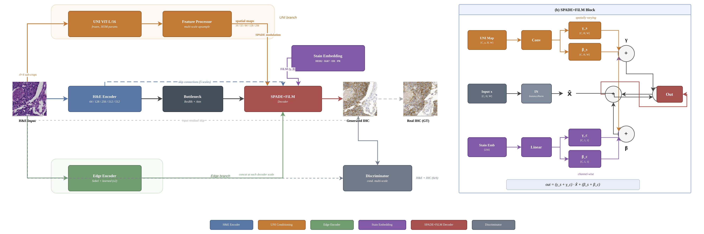
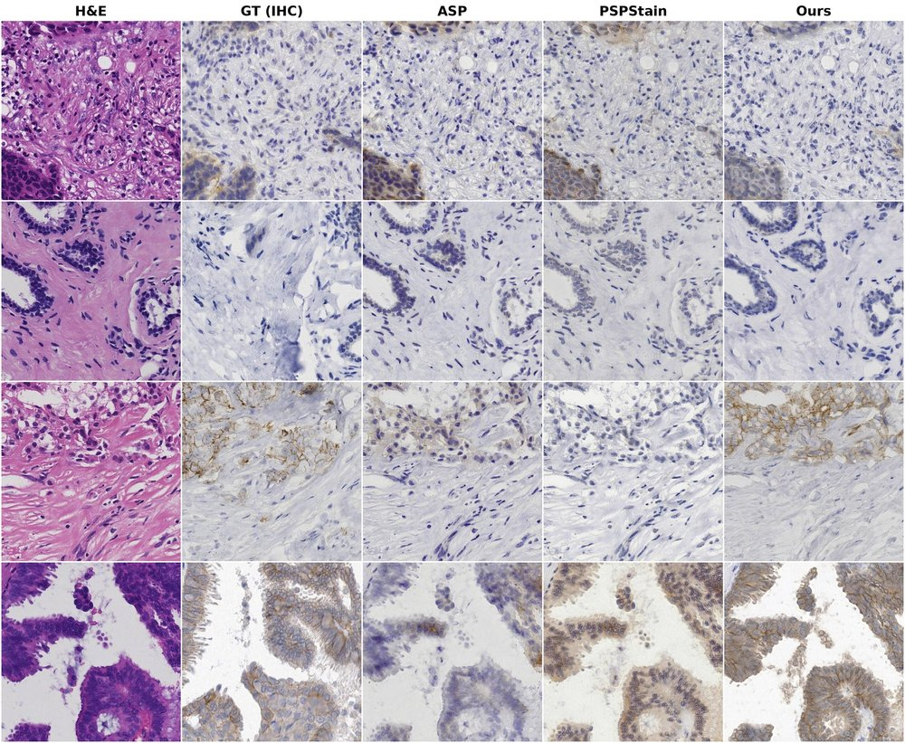

1University of Texas at Arlington 2Department of Radiology, St. Jude Children's Research Hospital 3Department of Pathology, St. Jude Children's Research Hospital
We present UNIStainNet, a deep learning framework for virtual immunohistochemistry (IHC) staining from standard hematoxylin & eosin (H&E) histopathology images. Our approach uses a SPADE-UNet generator conditioned on dense spatial features from a frozen UNI pathology foundation model (ViT-L/16), enabling the generator to leverage fine-grained tissue morphology for accurate stain prediction. A FiLM-based stain embedding allows a single unified 42M-parameter model to generate all four clinically important breast cancer biomarkers — HER2, Ki67, ER, and PR — in a single forward pass. Our misalignment-aware loss suite (perceptual loss, DAB intensity supervision, unconditional discriminator) is specifically designed for the inherent spatial shifts between consecutive tissue sections used for training. UNIStainNet achieves state-of-the-art results on both the BCI and MIST benchmarks, with Pearson-R > 0.92 across all four stains.
The 512×512 H&E input is encoded by a convolutional encoder while a frozen UNI ViT-L/16 extracts dense spatial features via 4×4 sub-crop tiling, yielding 1,024 spatially-resolved tokens at 32×32 resolution. The SPADE+FiLM decoder modulates each layer using both spatially-resolved UNI features (via SPADE) and stain-specific embeddings (via FiLM), allowing a single set of decoder weights to produce any of the four target IHC stains.

Figure 1. UNIStainNet architecture. Left: overall pipeline with H&E encoder, UNI spatial conditioning branch, stain embedding, and SPADE+FiLM decoder. Right: detail of the SPADE+FiLM normalization block combining spatial UNI features (γs, βs) and stain-specific FiLM parameters (γc, βc).
| Stain | FID ↓ | KID×1k ↓ | Pearson-R ↑ | DAB KL ↓ |
|---|---|---|---|---|
| HER2 | 34.5 | 2.2 | 0.929 | 0.166 |
| Ki67 | 27.2 | 1.8 | 0.927 | 0.119 |
| ER | 29.2 | 1.8 | 0.949 | 0.182 |
| PR | 29.0 | 1.1 | 0.943 | 0.171 |

Figure 2. Multi-stain generation on MIST. Each row shows a different stain: H&E input (left), ground truth IHC (center), and UNIStainNet output (right). The model produces membrane staining for HER2, nuclear punctate patterns for Ki67, and diffuse nuclear staining for ER and PR.

Figure 3. Visual comparison on BCI (H&E → HER2). ASP generates near-zero DAB signal (appearing mostly blue/purple), while UNIStainNet preserves the expected brown chromogen staining patterns.

Figure 4. Comparison on MIST across methods.